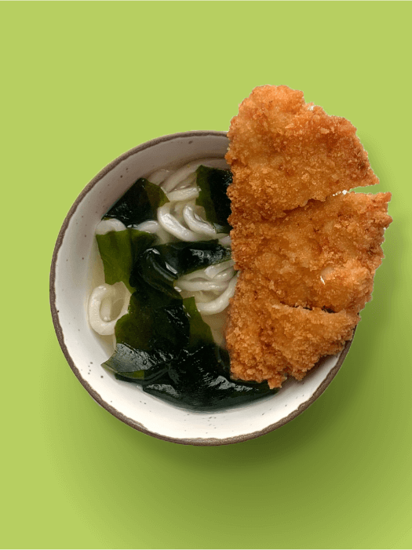
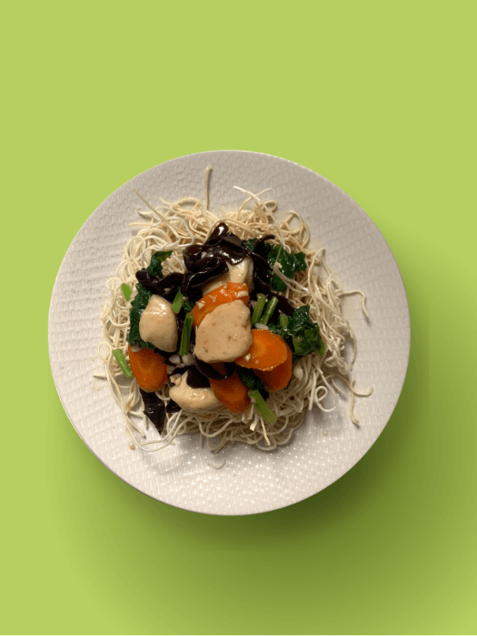
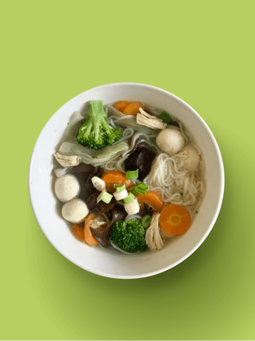
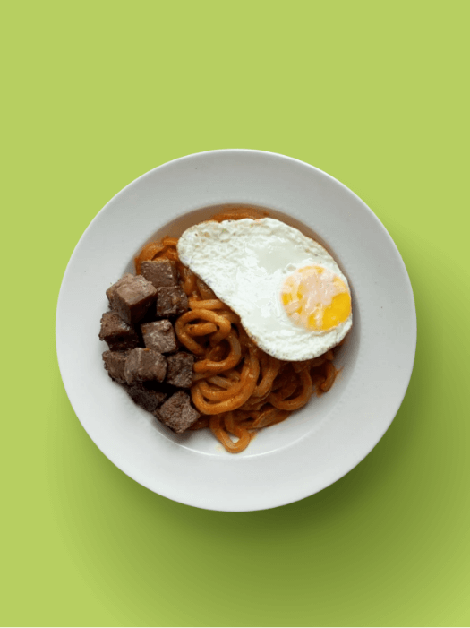

Get ready to meet Yoyo - the free-spirited, fun-loving Southeast Asian girl who never goes anywhere without her trusty flip-flops and her insatiable appetite for good food!
Yoyo is more than just a brand ambassador - she's a travel buddy, a confidante, and a role model all rolled into one. With her optimistic and self-loving personality, Yoyo is the perfect guide for anyone who wants to embrace life and all its adventures.
And speaking of adventures, Yoyo knows a thing or two about living life to the fullest. She's been on a journey of self-discovery that has taught her to embrace her flaws, accept her mistakes, and never strive for perfection. Because for Yoyo, life isn't about being perfect - it's about experiencing all the ups and downs, that come your way, and finding joy in the journey.
So if you're ready to join Yoyo on her adventure, put on your flip-flops, pack your sense of humor, and get ready to explore the world of healthy eating and living with the coolest and most adventurous girl around. Yoyo is waiting for you!

Yoyo's Noodle
Series
Introducing the latest additions to the Yoyo Series - Curry Laksa Ramen and Mee Sua Goreng! Packed with natural ingredients and made with Yoy Natura's signature commitment to healthy eating, these new products are the perfect way to indulge your taste buds without sacrificing your health.
Both Curry Laksa Ramen and Mee Sua Goreng are low in fat and easy digest, making them the perfect choice for anyone looking to enjoy a satisfying meal without the guilt. And with no eggs used in their production, they're suitable for anyone with dietary restrictions or who simply prefers egg-free dishes.
What really sets these products apart, however, is the use of natural sun-dried ingredients. This special process ensures that the flavors are intensified and the nutrients are preserved, resulting in a truly delicious and healthy meal.
So whether you're a fan of spicy, creamy laksa or the bold, savory flavors of mee sua goreng, these new products are sure to become a staple in your healthy eating routine. Try them today and experience the best of Southeast Asian cuisine - the healthy way!
Cooking Recipes
01

Tom Kha Ramen
02
White Miso Udon Soup
03
Ifumie
04

Kitsune Udon
05
Indonesia Kimio Soup
06

Japanese Curry Udon
07

Singapore Fishball Mee Pok
08
Spicy Creamy Gochujang Udon
09